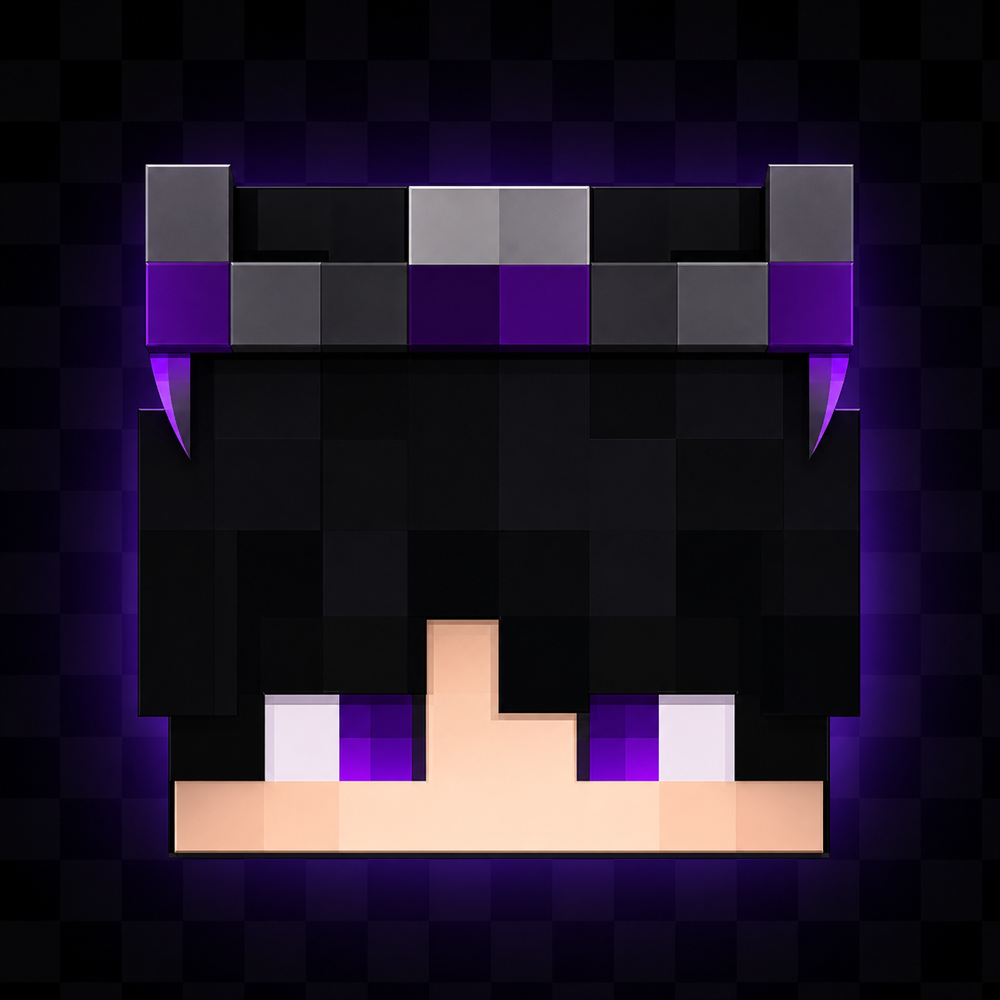

Generador Mini-Skin
Creado por Juniorcito_
Elige que quieres crear.
Generar skin portadora
Usa dos skins: una para la cabeza y otra para el cuerpo portador.
Crear Peluches
Usa una skin para la cabeza y el cuerpo por defecto del proyecto.
Editor de skins
Edita una skin 64x64 con pincel, borrador, cuentagotas y descarga.